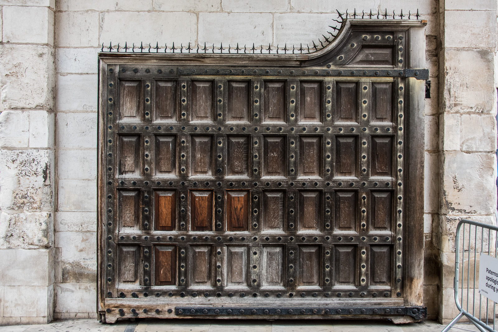
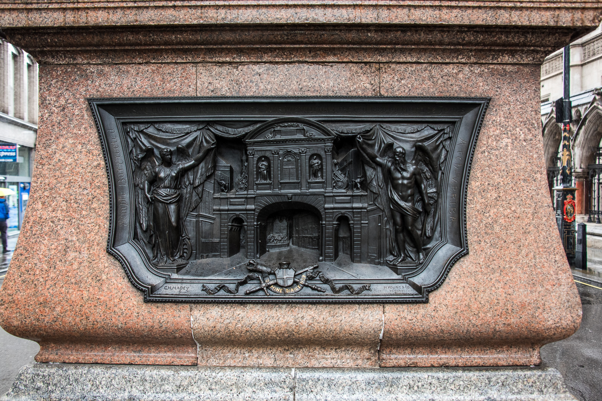

Temple Bar:
What a Bar Actually Is
Simon Fraser is a trustee of the Temple Bar Trust and a liveryman of the Worshipful Company of Joiners and Ceilers — the livery company whose offices adjoin the space where Temple Bar now stands. He begins by clarifying a common confusion: Temple Bar in London is not, and has never been, a pub. A bar, in this context, is literally a bar across a road — a threshold, a boundary marker, a point of control.
Temple Bar marks the historic boundary between the City of London and Westminster. The name derives from the Temple — the area of the Inns of Court, whose name in turn comes from the Knights Templar, who established their London headquarters here in the 12th century. The Temple Church, built by the Templars and still standing, is one of the finest examples of Norman round-church architecture in England.
Christopher Wren's Gate:
Inspired by Paris & Decorated with Heads
The gate that stands in Paternoster Square today was designed by Christopher Wren in the early 1670s, replacing a wooden predecessor that burned in the Great Fire. Wren's design draws directly on French precedent — curved pediments and niched figures similar to a church he had seen in Paris. The detail is remarkable: the only time Wren had physically been outside England was a single visit to Paris, from which he brought back books and drawings. That one trip provided the visual vocabulary for several of his post-Fire works.
The upper sections of the original gate carried something that modern visitors find startling: human heads. The heads of traitors and executed criminals — particularly Jacobites and others convicted of treason — were displayed on spikes at the top of Temple Bar as a warning and a spectacle. Samuel Pepys writes about seeing them; so does Charles Dickens. The practice was standard for London's major gateways through much of the 17th century.
A cast of one of the last such heads — Sir Francis Talbot, executed in 1746 at the end of the Jacobite rising — is displayed at the site today. The historical reality of Temple Bar as a place of display and deterrence sits uncomfortably alongside its current role as an elegant pedestrian gateway, but Simon does not shy away from it. The gate's history is part of its character.
The Legal District, Pepys
& a Very Busy Crossing
In the 17th and 18th centuries, the area around Temple Bar was one of the liveliest in London — booksellers, coffee houses, printers, lawyers, and the unceasing traffic of the main road between the City and Westminster. The Inns of Court were immediately behind the gate on the City side; the legal profession generated enormous foot traffic.
The gate straddled the road. Pedestrians passed through side archways; vehicles through the central arch. The bustle became, eventually, the problem. Carts, coaches, sedan chairs, pedestrians — Fleet Street and the Strand were chronically congested, and Temple Bar sat in the middle of the chokepoint. Childs Bank, which occupied premises nearby and used the gate's ledges for storage, was one of the organisations that inadvertently contributed to structural loading beyond Wren's design. The bank's symbol was the gate — it continued to appear on Childs Bank cheques until the bank was taken over a few years before this tour.
Eleven Days to Dismantle,
Numbered Stones & a Country Estate
By the 1870s, the City of London Corporation had decided that Temple Bar had to go. The congestion it caused was genuinely severe, and it was deteriorating structurally. In 1876, the gate was taken down in eleven days — quickly, by a workforce operating with the efficiency of a Victorian demolition gang and none of the health and safety constraints that would make such a project take ten times as long today.

Every stone was numbered before demolition. The Corporation had no fixed plan for what would happen to the gate after removal, but they understood that its historical significance made simple disposal unacceptable. The numbered stones went into storage — for years, then for decades.
What rescued them was a wealthy eccentric. Lady Valerie Meux — a former barmaid and banjo player who had married the owner of a brewing family and become a celebrated socialite — bought the stones, transported them to the family's country estate at Theobalds Park in Hertfordshire, and had Temple Bar rebuilt in the grounds as a feature. She kept zebras. She donated money to British soldiers during the Boer War. A soldier named Hedworth Lambton came to thank her in person, and she — having no children — asked him to take the family name. He became Sir Hedworth Meux. Temple Bar stood at Theobalds Park for over a century, gradually deteriorating, saved from complete ruin by being inside a private estate and out of the rain.
Temple Bar in Decline:
The Lead Roof Goes Missing
By the 1970s, photographs of Temple Bar at Theobalds Park show a gate in serious difficulty. The lead roof had been removed — by thieves, or deliberately, or through neglect; accounts differ. Without the lead, rainwater penetrated the stone. The sculptures in the niches had been crated and put in storage. The gate sat in a field, slowly returning to its constituent parts.
Various proposals to relocate it circulated — one montage showed it installed on Ludgate Circus, which Simon considers might have worked but was rejected. The problem was money and ownership: who would pay for the restoration, and where would it go?
The Return:
How Temple Bar Got Back
The reconstruction of Paternoster Square — the area between St Paul's Cathedral and Newgate Street — in the early 2000s provided the opportunity. The scheme involved a significant architectural competition in the 1980s that became a major public debate: the Prince of Wales famously favoured a classically-inspired scheme by John Simpson, which would have placed a new building very close to where Temple Bar now stands. The competition ultimately settled on a scheme by Sir William Whitfield, which produced the more conventional office buildings you see today.
The Temple Bar Trust, formed to raise funds for the gate's restoration and relocation, secured the stones from Theobalds Park and began the process of bringing them back to London. The restoration took years and was expensive — the Trust is still working to raise money, and donations via tap-to-pay are available at the site. Temple Bar was reinstalled in Paternoster Square in 2004, 128 years after it was taken down from Fleet Street, approximately 300 metres from its original position.
The reinstallation included the sculptures — now back in their niches, rather than in crates in a barn. The statues on the gate represent James I and Anne of Denmark on one side, and Charles I and Charles II on the other — the Stuart monarchs under whose reigns the bar was most significant. The gates themselves are closed in a way that would have been normal in their active years.
The Chapter House, the Last Surviving Gate
& What You Can Hire
Temple Bar is the last surviving gateway of the original London — the only structure that marked the boundary between the medieval City and the world beyond it that still exists in three dimensions. The other gates — Aldgate, Newgate, Cripplegate — are known only from documents and archaeological traces. Temple Bar was designed by the greatest architect of the post-Fire period, survived two centuries of use, spent another century in a field in Hertfordshire, and is now back where it belongs.
Adjacent to Temple Bar is the Chapter House of St Paul's Cathedral — a small building designed by Wren, restored in the 20th century, with a column that may be a replica of a feature originally designed by Inigo Jones for the old cathedral. Simon is careful about this attribution: Grant, the usual guide for Temple Bar who is taking a break today, knows more about the detail.
The curved pediments of Temple Bar are directly comparable to the architecture Wren saw on his single Paris trip. It is the same vocabulary he used at Temple Bar and at other post-Fire works — the entire visual idiom of Christopher Wren's secular architecture can be traced back to a few books and drawings brought back from a single journey to France.
The space under and around Temple Bar is available for private hire — dinners, corporate events, receptions. This is how the Trust funds its running costs alongside donations. The space is unusual: the gate itself forms part of the room. Events held here are, in an entirely literal sense, inside one of Christopher Wren's buildings.